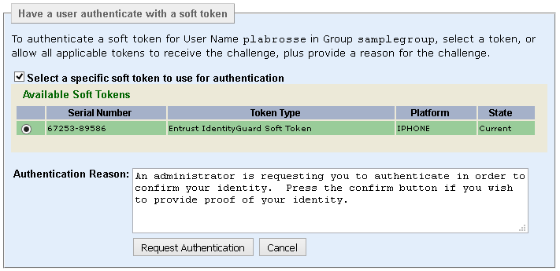

|
IdentityGuard Server 13.0 Administration Guide |
|
IdentityGuard Server 13.0 Administration Guide |
Typically, mobile soft tokens receive authentication challenges from websites. This feature allows an Entrust IdentityGuard administrator to send a challenge to a user's mobile soft token app on demand from the Administration interface. This way, push authentication can be used in new scenarios, for example, to grant someone access to a building (like a badge) or to verify the identity of someone calling a help desk to reset a password or obtain account information.
Complete this procedure to configure the Administration interface to send push authentication security challenges to Entrust IdentityGuard mobile soft token app.
Note: This procedure assumes that mobile soft token authentication and transaction verification are already set up in your Entrust IdentityGuard environment. For setup information about transaction verification with mobile soft tokens, see the Entrust IdentityGuard Self-Service Module Installation and Configuration Guide.
Prerequisite
● The administrator who issues a push authentication challenge from the Administration interface must have a role with the userTokenAuthenticate permission enabled.
To configure the Administration interface to send push authentication challenges to mobile apps
2. On the Table of Contents, click Push Authentication Configuration for Mobile Smart Credential and Soft Token.
3. Under Soft Token Challenge Default Reason, enter default text you want to display to users who are asked to respond to a security challenge issued from the Administration interface. If you do not specify a message, the following default message is used:
An administrator is requesting you to authenticate in order to confirm your identity. Press the confirm button if you wish to provide proof of your identity.
Note: You can change the message sent to the user when you issue each challenge. This property just sets a default you can use for the most common scenario.
4. Click Validate & Save.
5. Log out of the Properties Editor and restart the Entrust IdentityGuard Server service after you make all property changes.
Prerequisites
The user's mobile soft token identity must have the following attributes. You can check them in the Token Details page for a user account.
● Token Activation State = Activated
● Supports Delivery and Signature = Yes
● Supports Online Transactions = Yes
To send push authentication challenges from the Administration interface
1. Log in to the Administration interface.
2. Locate the user.
3. From the Authentication Types drop-down list, select Tokens.
4. (Optional) To verify the token has the required attributes, select a token and review the Token Details page.
5. Click Authenticate Soft Token. The Authenticate a soft token for a user screen appears.
6. If the user has more than one soft token, the challenge is sent to all eligible smart credentials by default. To send the challenge to a specific soft token identity, enable the Select a specific soft token to authenticate option, and then select the desired identity from the list that appears.

7. (Optional) If the default authentication reason does not fit the current scenario, enter a different authentication reason. The message you enter here is displayed on the user's mobile device as part of the challenge.
8. Click Request Authentication.
Note: Do not navigate away from this page before the user response is received. If you do, the response will not be received by the Administration interface and the challenge will fail. Login attempts remaining decrease by one.
The user should see the challenge on the mobile device and select Confirm to authenticate. There may be a slight pause (about 3 seconds) while Entrust IdentityGuard polls for the user response, and then the Administration interface displays a banner with a message confirming that the authentication was successful.

 Windows
Windows